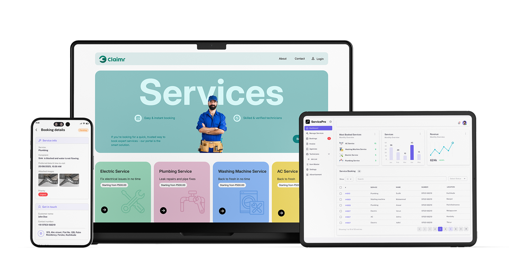

Claimr
Creating a connected ecosystem that streamlines complaint management, service operations, and field technician workflows.
Role
UI Designer & Front-End Developer
Platform
Web+ SaaS + Mobile App
Industry
Service Management
Tools
Figma, Linear
Project Overview
Claimr is a multi-platform service management and complaint handling system designed to streamline communication between customers, administrators, and field technicians.
Public Website
Customers can submit complaints, request services, and track service-related information through an intuitive web interface.
Admin Dashboard
A centralized platform for managing services, complaints, agencies, technicians, invoices, and operational workflows.
Technician Mobile App
A mobile solution that enables technicians to view assigned jobs, manage tasks, and navigate to work locations efficiently.
The Problem
Traditional claim management systems often create friction, leading to delayed payouts, frustrated users, and internal data silos.
Complaint Submission Complexity
Customers often struggle to report issues through traditional channels, leading to delays in service requests and inefficient communication.
Lack of Service Visibility
Without a centralized system, tracking complaints, service requests, and job progress becomes difficult for both customers and administrators.
Inefficient Operational Management
Managing complaints, technicians, agencies, invoices, and service operations across multiple tools can slow down workflows and reduce operational efficiency.
The Objective
The primary objective was to create a unified platform that simplifies complaint submission, improves service management, and streamlines field operations.
Enable customers to easily submit complaints and service requests
Provide administrators with centralized operational control
Help technicians manage assigned tasks and locations
Improve communication between stakeholders
Create a seamless experience across all platforms
Process
Research
Analyzed existing claims workflows and identified usability gaps and user pain points.
UI Design
Designed a unified interface system for website, dashboard, and mobile platforms.
Prototype
Developed interactive prototypes to validate user journeys, test interactions.
Development
Developed the website and dashboard front-end with responsive implementation.
My Role
The Challenge
Simplifying Complaint Management
The system needed to support multiple service categories, complaint submissions, and operational workflows while remaining simple and intuitive for customers. Designing a streamlined submission process without overwhelming users was a key challenge.
Cross-Platform Consistency
Claimr consists of three interconnected platforms serving different user groups. Maintaining a consistent experience across the website, dashboard, and technician mobile app required a unified design system and standardized interaction patterns.
Service Operations Management
Administrators needed to manage complaints, technicians, agencies, invoices, and service requests from a single interface. Organizing large volumes of operational data into a structured and easy-to-use dashboard was essential for efficient management.
Design Approach
Simplicity & Clarity
Reduced complexity through intuitive navigation and streamlined user flows.
Consistent System
Reusable components and standardized patterns across all platforms.
Visual Hierarchy
Clear typography, spacing, and content organization for better usability.
Responsive Design
Optimized layouts for desktop, tablet, and mobile experiences.
Reduced Load
Designed interfaces that guide users naturally through each task.
The Solution
The final solution connects customers, administrators, and field technicians through a unified ecosystem.
Customers submit complaints and service requests through the website. Administrators manage operations, assign tasks, and monitor service activities through the dashboard. Technicians receive assignments and track work locations through the mobile application.
This connected workflow improves communication, increases operational efficiency, and provides better visibility throughout the service lifecycle.
The Result
Claimr successfully transformed a complex claims management workflow into a streamlined multi-platform experience.

Simplified claim submission & Clear claim tracking
Structured administrative workflow
Consistent user experience across all platforms